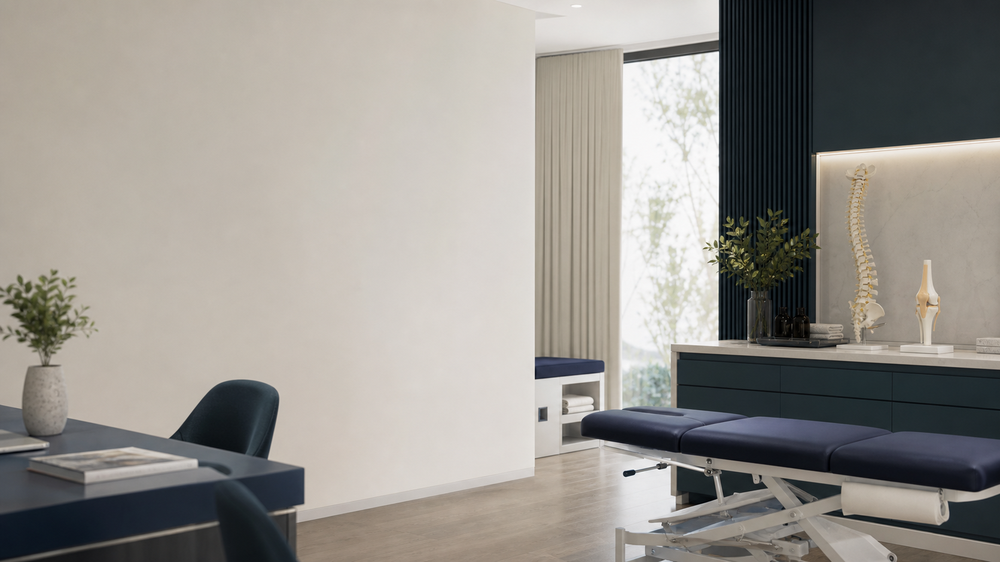

Dr. Αλέξανδρος Οικονομίδης
Ορθοπαιδικός με ολιστική προσέγγιση — MD, MSc Αθλητιατρικής, LAc. Στόχος: η ουσιαστική θεραπεία της αιτίας της πάθησης, η ολοκληρωμένη αποκατάσταση και η γρηγορότερη δυνατή επάνοδος στην ανώδυνη κίνηση.

Εξατομικευμένη Ολιστική Ορθοπαιδική
«Στόχος δεν είναι απλώς η καταστολή του συμπτώματος, αλλά η αντιμετώπιση του αιτίου της πάθησης.»
Ο Dr. Αλέξανδρος Οικονομίδης είναι Ορθοπαιδικός, απόφοιτος Γενικής Ιατρικής (Medical Doctor), με μεταπτυχιακή εξειδίκευση στην Αθλητιατρική από το Αριστοτέλειο Πανεπιστήμιο Θεσσαλονίκης.
Η εκπαίδευσή του περιλαμβάνει δίπλωμα Ιατρικού Βελονισμού ICMART και μετεκπαίδευση σε Λονδίνο και Μπέργκαμο στην οξυγονο-οζονοθεραπεία, ενώ είναι τακτικό μέλος της Ιταλικής Εταιρείας Οξυγόνο-Οζονοθεραπείας (S.I.O.O.T.). Συνδυάζει την κλασική με την εναλλακτική ιατρική, για μια πραγματική, ολιστική θεραπεία του ασθενή ως «όλον».
- MD — Medical Doctor
- MSc Αθλητιατρικής, Αριστοτέλειο Πανεπιστήμιο Θεσσαλονίκης
- Δίπλωμα Ιατρικού Βελονισμού (LAc), ICMART
- Οξυγονο-Οζονοθεραπεία & Βιορύθμιση — μετεκπαίδευση σε Λονδίνο & Μπέργκαμο, μέλος S.I.O.O.T.
Γιατί ολιστική ορθοπαιδική
Η ολιστική ιατρική συμπληρώνει τη συνηθισμένη «κλασική» ορθοπαιδική προσέγγιση, θεραπεύοντας το σώμα εκ βάθους.
Ολιστική διάγνωση
Κλινική εξέταση, ιστορικό και σαφής θεραπευτικός στόχος πριν από κάθε παρέμβαση — αντιμετώπιση του αιτίου, όχι μόνο του συμπτώματος.
Συντηρητικά όταν γίνεται
Έμφαση σε μη χειρουργικές, βιολογικές και αναγεννητικές θεραπείες όταν η πάθηση και η λειτουργική εικόνα το επιτρέπουν.
Ελάχιστα επεμβατικές μέθοδοι (MIS)
Όταν χρειάζονται, εφαρμόζονται πάντα με ενδελεχή ενημέρωση και πρόγραμμα αποκατάστασης.
Ας δούμε την περίπτωσή σας
Κλείστε ραντεβού για αξιολόγηση, δεύτερη γνώμη ή σχεδιασμό θεραπείας.